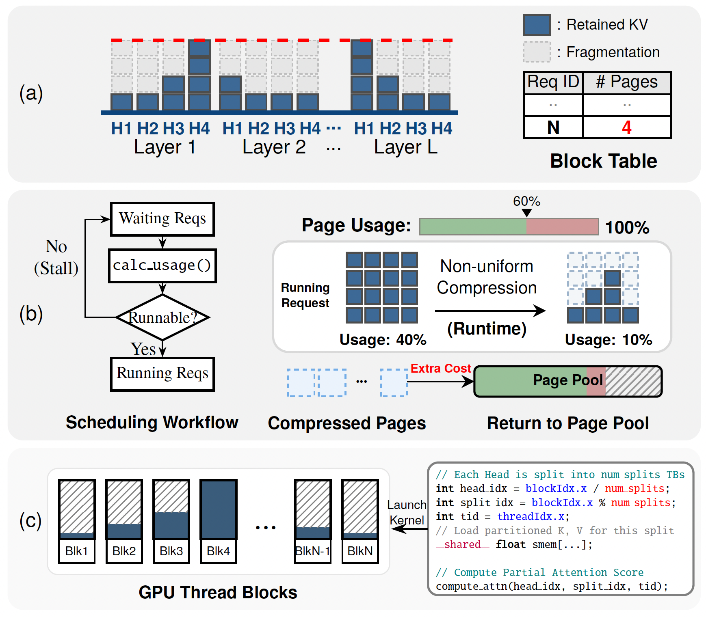
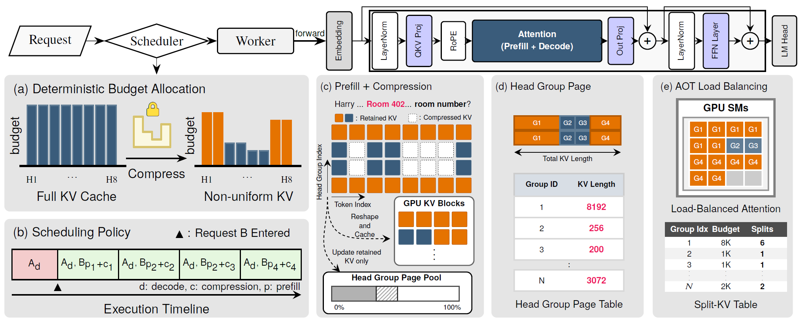
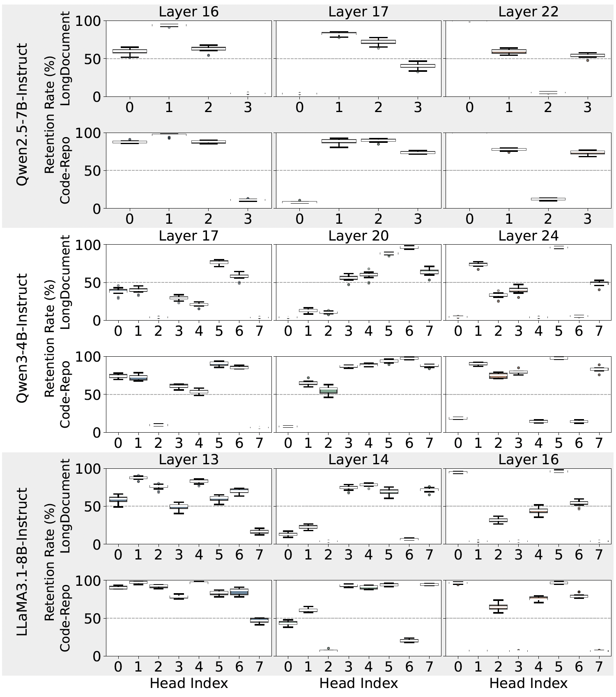
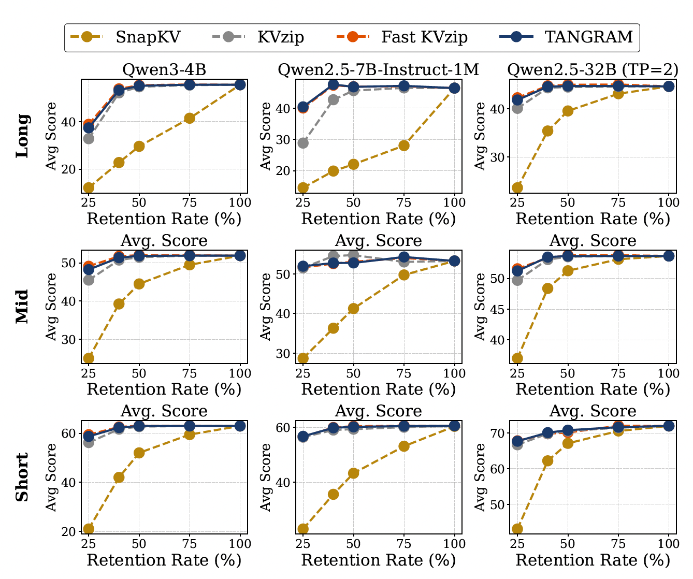
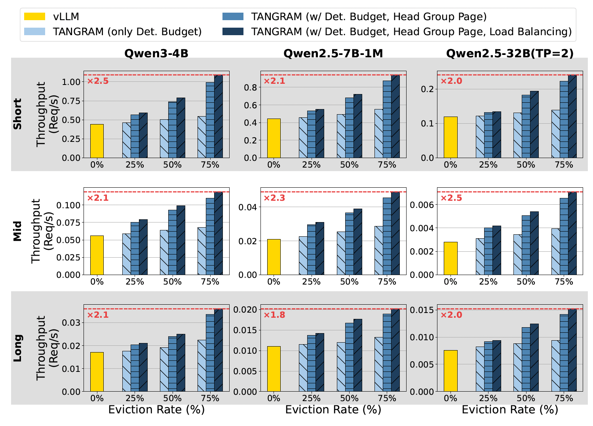

2.6×
Throughput Improvement
4×
Memory Savings
<1%
Accuracy Drop
Evaluated on Qwen3-4B, Qwen2.5-7B-1M, and Qwen2.5-32B across SCBench, LoCoMo, RealTalk, and LongMemEval, Tangram preserves conversational accuracy while significantly outperforming state-of-the-art serving frameworks such as vLLM.
Multi-turn Large Language Model (LLM) serving is critical for consistent user experiences, yet the linear growth of the Key-Value (KV) cache imposes significant pressure on GPU memory and bandwidth. Non-uniform KV compression effectively preserves more information by considering the individual importance of each KV cache. However, such KV cache heterogeneity introduces various systemic challenges—including memory fragmentation, scheduling complexities, and diminished kernel utilization—which collectively lead to significant inefficiencies in existing LLM serving systems.
To overcome these challenges, we present Tangram, a novel serving system designed to make Non-uniform KV caches practical. Tangram addresses systemic inefficiencies through three core techniques: (1) Deterministic Budget Allocation assigns a static memory footprint to each head based on its intrinsic pattern, entirely eliminating dynamic scheduling overhead and prefill stalls; (2) Head Group Page clusters attention heads with similar retention demands and manages them with independent, vectorized page tables, thereby maximizing physical memory reclamation; and (3) Ahead-of-Time (AOT) Load Balancing leverages static budget profiles to ensure uniform GPU utilization without runtime overhead. Experimental results show that Tangram improves throughput by up to 2.6× compared to existing baselines, while fully preserving model accuracy.

In multi-turn serving, each turn appends to the dialogue history (Ht), making the KV cache scale linearly with the number of turns. Even at moderate batch sizes, this footprint surpasses the model weights themselves, becoming the primary bottleneck for scalability and throughput. KV cache compression is therefore essential, but uniform compression discards context-essential information, motivating Non-uniform KV compression.

Attention heads exhibit diverse concentration patterns: some focus on a few critical tokens while others spread across the context. By assigning each head a budget proportional to its retrieval role, Non-uniform compression produces up to a 42× disparity in per-head KV size while preserving conversational accuracy at aggressive compression rates.

Modern serving stacks (PagedAttention, Continuous Batching, FlashDecoding/FlashInfer) are co-designed under a uniform-KV assumption. Non-uniform compression breaks this assumption, exposing three fundamental limitations:
A unified physical block spans all layers and heads simultaneously, so per-head heterogeneity cannot be reclaimed. Each page is sized by the longest-retaining head (Lmax), leaving the others mostly empty and locking compressed memory inside structural dead space.
Reclaiming scattered pages on-the-fly forces the scheduler to track and re-plan compressed footprints at runtime. This CPU overhead degrades overall system throughput.
Uniform KV splits become "stragglers" under heterogeneous lengths, inflating decode attention latency by up to 1.7×. Dynamic rebalancing (FlashInfer-style) restores utilization but loses plan reuse across layers, costing 15–20% of decode time per step.
Replaces runtime-decided compression with offline-profiled, per-head static budgets, eliminating the dynamic compress-and-reclaim bottleneck and enabling precise page planning.
Clusters heads by budget similarity and assigns each group an independent page table. A Vectorized Block Table (SIMD + OpenMP) keeps fine-grained grouping CPU-cheap.
Precomputes a per-layer Workload Partition Table from static budget profiles, achieving balanced SM utilization with zero runtime planning overhead.

Tangram eliminates the dynamic evict-and-reclaim bottleneck by replacing runtime-decided compression with a static, offline-profiled budget for every head.
Per-head retention rates are highly heterogeneous within a layer, yet each head's budget is input-independent and stable across samples and domains (verified across Qwen2.5-7B, Qwen3-4B, LLaMA3.1-8B). This reframes "runtime uncertainty" as a statically resolvable model property.

Per-head retained KV sizes are nearly invariant across 50 sample inputs.
Each head's static budget is profiled from just 50 pilot samples, enabling precise planning and fused prefill+compression without runtime overhead.

For each layer, heads are sorted by their offline budget Bℓ,h and partitioned into H/G groups. Page capacity is bounded by the local maximum within a group, tightly aligning allocations to actual demand and reclaiming the dead space caused by short-retention heads.
Fine-grained grouping naively raises CPU scheduling cost to O(Nreq × H/G). Tangram batches block-table operations with OpenMP across groups and SIMD (AVX-512) within a group, keeping CPU overhead negligible even at small G.

Heterogeneous KV lengths skew per-thread-block workloads, inflating decode attention latency by up to 1.7×. Dynamic rebalancing recovers SM utilization but loses plan reuse across layers, paying 15–20% of decode time per step. Tangram avoids both:
The result: load-balanced GPU utilization without the latency penalty of online planning.
2.6×
Throughput Improvement
4×
Memory Savings
<1%
Accuracy Drop
Evaluated on Qwen3-4B, Qwen2.5-7B-1M, and Qwen2.5-32B across SCBench, LoCoMo, RealTalk, and LongMemEval, Tangram preserves conversational accuracy while significantly outperforming state-of-the-art serving frameworks such as vLLM.
Throughput gains are only meaningful if accuracy holds. Compared against uniform compression (SnapKV) and non-uniform compression (KVzip, FastKVzip), Tangram's static-budget allocation tracks the full-KV baseline across Short, Mid, and Long context scales — even at aggressive retention rates.

Built on top of vLLM, Tangram is evaluated end-to-end against the vanilla baseline across multi-turn workloads. By reclaiming structural dead space and eliminating control-plane overhead, it converts theoretical compression gains into real serving throughput.



-